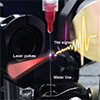

|
For Authors
| For Reviewers
| For Editors
| Contents |
| Editorial Article |
|
 |
Qihuang Gong and Wei Zhao
Ultrafast Science, Volume 2021, Article ID 9765859 View: PDF | Get Citation |
To reflect blooming interest in ultrafast dynamics, we are launching a new journal to publish top-quality research in the field. Ultrafast Science is now open for your submissions. |
|
| Review Article |
|
|  |
Yiwen E, Liangliang Zhang, Anton Tcypkin, Sergey Kozlov, Cunlin Zhang, and Xicheng Zhang
Ultrafast Science, Volume 2021, Article ID 9892763 View: PDF | Get Citation |
|
Yindong Huang, Jing Zhao, Zheng Shu, Yalei Zhu, Jinlei Liu, Wenpu Dong, Xiaowei Wang, Zhihui Lv, Dongwen Zhang, Jianmin Yuan, Jing Chen, and Zengxiu Zhao
Ultrafast Science, Volume 2021, Article ID 9837107 View: PDF | Get Citation |
|
| Research Article |
|
|
Dongfang Zhang, Tobias Kroh, Felix Ritzkowsky, Timm Rohwer, Moein Fakhari1, Huseyin Cankaya, Anne-Laure Calendron, Nicholas H. Matlis and Franz X. Kärtner
Ultrafast Science, Volume 2021, Article ID 9848526 View: PDF | Get Citation |
|
Bing Xue, Yuuki Tamaru, Yuxi Fu1, Hua Yuan, Pengfei Lan, Oliver D. Mücke, Akira Suda, Katsumi Midorikawa, and Eiji J. Takahashi
Ultrafast Science, Volume 2021, Article ID 9828026 View: PDF | Get Citation |
|
Yuki Kobayashi, Christian Heide, Hamed Koochaki Kelardeh, Amalya Johnson, Fang Liu, Tony F. Heinz, David A. Reis, and Shambhu Ghimire
Ultrafast Science, Volume 2021, Article ID 9820716 View: PDF | Get Citation |
|
|
 |
The mission of Ultrafast Science is to build a platform for ultrafast scientific research; present new theories, concepts, ideas, technologies and progress in this field; publish the latest research representing the forefront of the discipline and that of international concern; and promote academic exchange and development worldwide.
|
If you do not want to receive this kind of email, please CLICK HERE to cancel the subscription. |